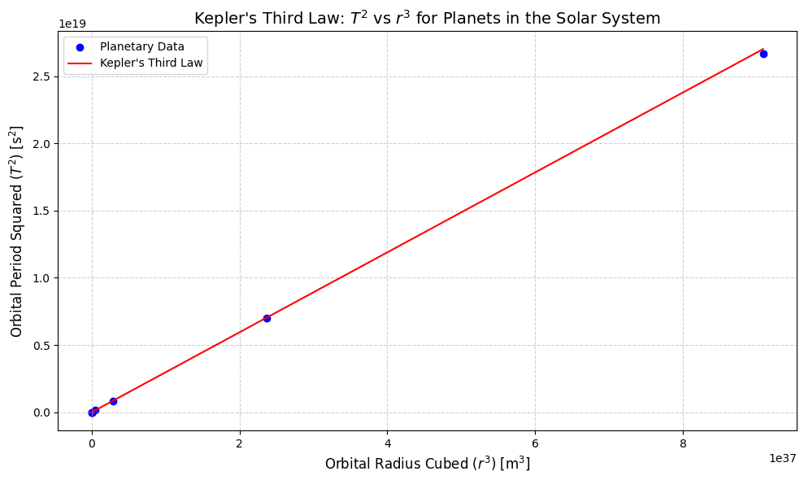

Problem 1
Derivation of Kepler's Third Law for Circular Orbits
Kepler's Third Law states that the square of the orbital period \((T)\) of a celestial body is proportional to the cube of the semi-major axis \((a)\) of its orbit. For circular orbits, the semi-major axis is simply the orbital radius \((r)\). This relationship can be derived using Newton's Law of Gravitation and the principles of circular motion.
Step 1: Gravitational Force and Centripetal Force
For a planet of mass \(m\) orbiting a star of mass \(M\) in a circular orbit ofradius \(r\), the gravitational force provides the centripetal force necessary for circular motion. The gravitational force is given by:
where \(G\) is the gravitational constant \((6.674 \times 10^{-11} \, \mathrm{m}^3 \mathrm{kg}^{-1} \mathrm{s}^{-2})\)
The centripetal force required for circular motion is:
where \(v\) is the orbital velocity of the planet.
Step 2: Equating Forces
For the planet to remain in a stable circular orbit, the gravitational force must equal the centripetal force:
Simplifying this equation, we get:
Step 3: Relating Orbital Velocity to Orbital Period
The orbital velocity \(v\) can also be expressed in terms of the orbital period \(T\). Since the planet travels the circumference of the orbit \((2πr)\) in time \(T\), the velocity is:
Substituting this into the equation for \(v^2\):
Simplifying:
Step 4: Deriving Kepler's Third Law
Rearranging the equation to solve for \(T^2\):
This is Kepler's Third Law for circular orbits, which states that the square of the orbital period is proportional to the cube of the orbital radius:
The constant of proportionality is \(\frac{4\pi^2}{GM}\) , where \(M\) is the mass of the central body (e.g., a star or planet).
Implications of Kepler's Third Law for Astronomy
Kepler's Third Law has profound implications for astronomy:
-
Calculating Planetary Masses: By measuring the orbital period and radius of a moon or satellite, astronomers can determine the mass of the central body. For example, the mass of Earth can be calculated using the Moon's orbital period and distance.
-
Determining Distances: The law allows astronomers to calculate the distances between celestial bodies. For instance, the distance of planets from the Sun can be determined using their orbital periods.
-
Understanding Gravitational Interactions: The law provides insights into the gravitational interactions between celestial bodies, helping to explain the stability of planetary systems and the dynamics of binary star systems.
-
Exoplanet Discovery: Kepler's Third Law is used to estimate the orbital characteristics of exoplanets based on their observed transit periods.
Real-World Examples
Example 1: The Moon's Orbit Around Earth
Orbital Radius \((r)\): \(3.84 \times 10^8 \, \mathrm{m}\)
Orbital Period \((T)\): \(27.3 \, \mathrm{days} \quad \mathrm{or} \quad 2.36 \times 10^6 \, \mathrm{s}\)
Using Kepler's Third Law:
Substituting the values for the Moon's orbit:
This calculation confirms the relationship and allows us to verify Earth's mass.
Example 2: Earth's Orbit Around the Sun
Orbital Radius \((r)\): \(1.496 \times 10^{11} \, \mathrm{m}\)
Orbital Period \((T)\): \(1 \, \mathrm{year} \quad \mathrm{or} \quad 3.154 \times 10^7 \, \mathrm{s}\)
Using Kepler's Third Law:
Substituting the values for Earth's orbit:
This confirms the relationship and allows us to calculate the Sun's mass.
Extension to Elliptical Orbits
Kepler's Third Law also applies to elliptical orbits, where the semi-major axis \((a)\) replaces the orbital radius \((r)\):
This generalization allows the law to be applied to all types of orbits, including highly elliptical ones, such as those of comets or artificial satellites.
Graphical Representation
A graphical representation of Kepler's Third Law would plot \(T^2\) on the y-axis and \(r^3\) on the x-axis for various celestial bodies. The resulting graph would be a straight line passing through the origin, with a slope of \(\frac{GM}{4\pi^2}\) This linear relationship visually confirms the law's validity.

Conclusion
Kepler's Third Law is a fundamental principle that connects the orbital period and radius of celestial bodies. Its derivation from Newton's Law of Gravitation highlights the deep relationship between gravity and motion. The law has wide-ranging applications in astronomy, from calculating planetary masses to understanding the dynamics of planetary systems. Its extension to elliptical orbits further underscores its universality in describing celestial mechanics.